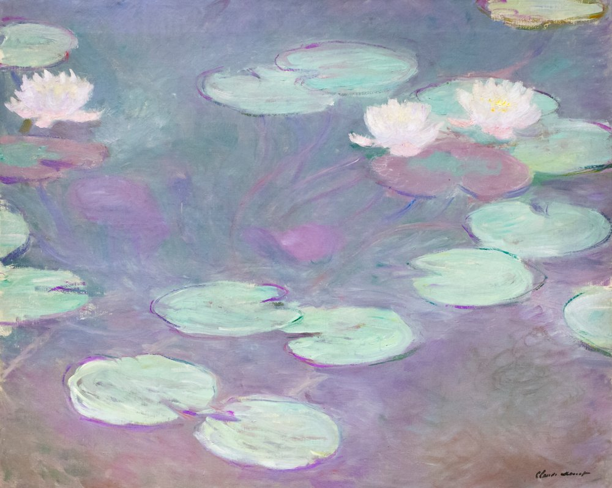

Il Giardino di Giverny e l'Ossessione della Luce
Nel 1883 Claude Monet si stabilisce a Giverny, in Normandia, dove crea il celebre giardino che diventerà il fulcro della sua produzione artistica nella seconda metà della vita. Affascinato dai giochi di luce sull'acqua, fa realizzare un ponte giapponese e uno stagno colmo di ninfee esotiche.
Negli ultimi trent'anni della sua esistenza, nonostante l'avanzare della cataratta, Monet trasforma lo stagno nel suo unico universo pittorico, dipingendo centinaia di tele dedicate alle Nymphéas. Non si tratta più di riprodurre la realtà botanica, ma di catturare l'atmosfera perenne del cambiamento atmosferico riflessa sulla superficie liquida.
La Dissoluzione della Forma e dello Spazio
Nelle grandi tele delle Ninfee, Monet compie una radicale rivoluzione visiva che anticipa l'astrattismo. Scompare l'orizzonte: non c'è più distinzione tra il cielo e l'acqua, tra l'alto e il basso. Lo spettatore è letteralmente immerso nello stagno, circondato da una superficie liquida in cui i fiori di loto e i riflessi dei salici piangenti fluttuano senza punti di riferimento spaziali.
La Pennellata Monetiana
Viste da vicino, le tele di Monet sembrano un caos materico di pennellate rapide, strati di colore sovrapposti e apparenti macchie slegate. Tuttavia, indietreggiando di pochi passi, l'occhio umano compie la magia: le tessere di colore si fondono, restituendo una profondità e una vibrazione luminosa straordinaria.
Cosa ti trasmette quest'opera?
"Guardare le Ninfee di Monet non significa soltanto osservare una tela, ma lasciarsi avvolgere da un silenzio visivo."
Davanti a questo specchio d'acqua, ciascuno di noi legge le proprie emozioni: c'è chi ritrova una quiete assoluta e chi avverte una sottile malinconia legata al tempo che scorre. E tu, che emozione provi lasciandoti catturare da questi colori?